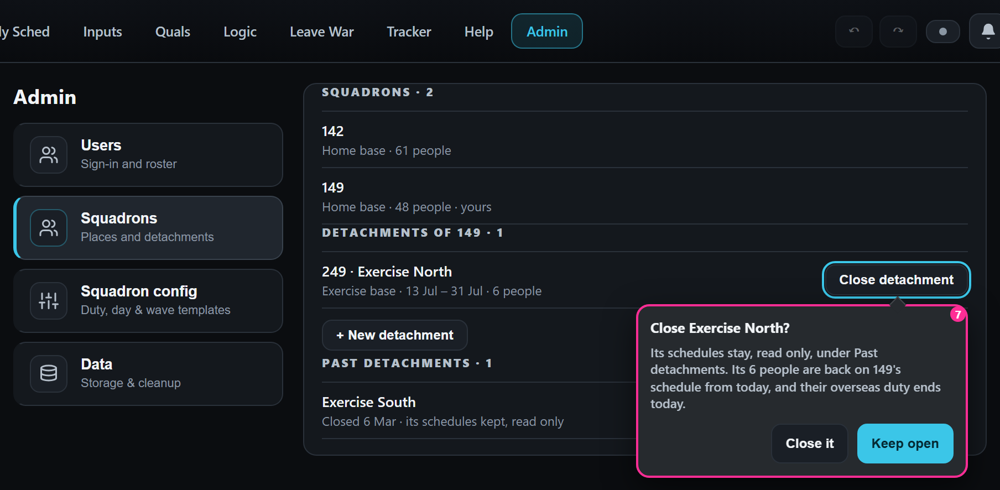
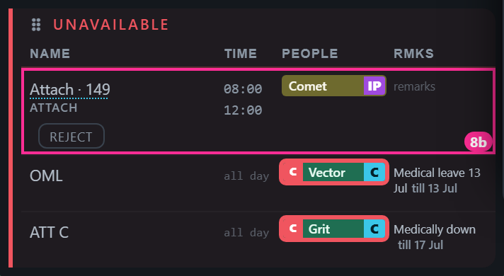
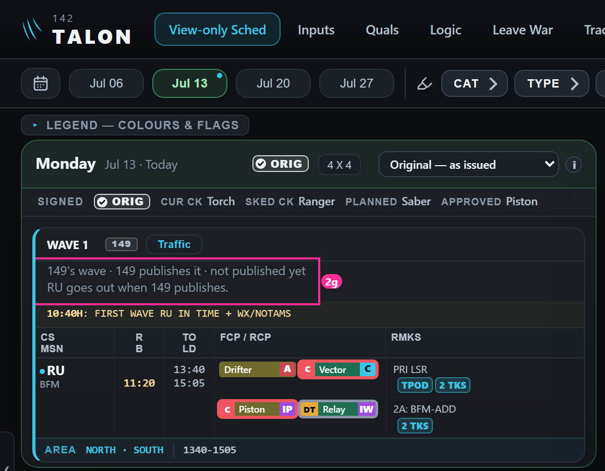
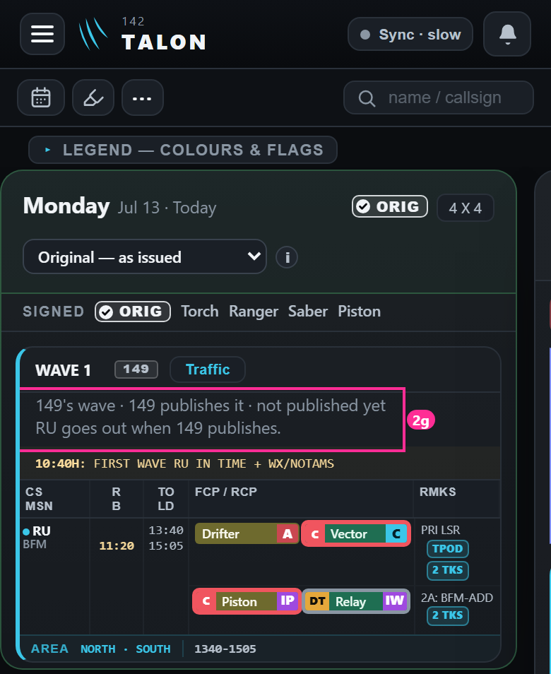
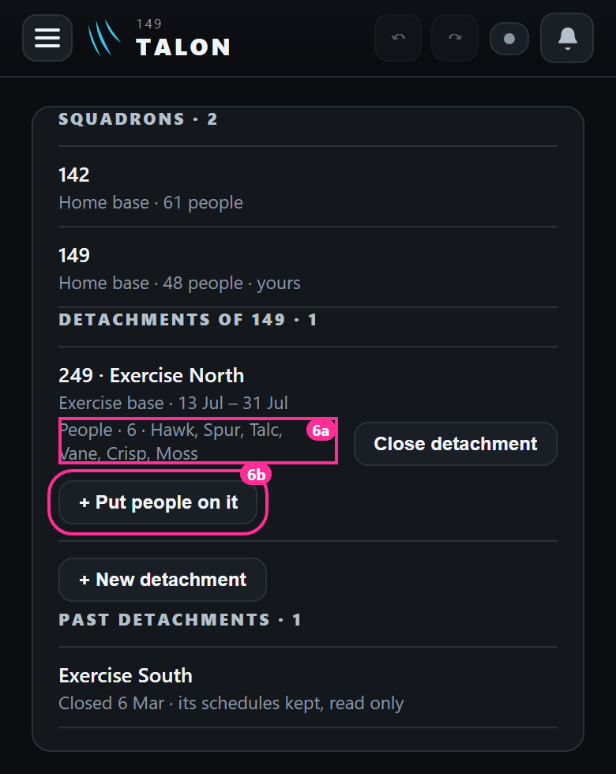

Two squadrons: Fable's read
Fable red-teamed the whole squadrons plan at your call, blind to Astra's and Opus's reports, then read chat 98's wording. 24 findings. Three fresh readers checked every claim against your rulings and the app's code, and I confirmed the deciding ones myself. Below: what needs your call, then each finding with an example. Pictures are the real app from earlier rounds, shown again for the place they are about; new drawings come in round 7. Round 6's page: here.
Corrections to what I told you
- X1C1 rested on a false reason. I said the last issue's sign-off names "are always names the boxes offer". Not so: a signer may since have lost his Scheduler tick or been posted out, and then the app refuses to publish. C1's recommendation changes (F18).
- X2C3 contradicts itself. "Back on 149's schedule today" and "their DET ends today" cannot both hold: an input's last day still counts him away. C3's recommendation changes (F15).
- X3Viper is one of 149's six on the Close card, and a 142 man in Q3. One of the two is wrong; round 7 uses a different name on the Close card.
Look at now: one decision each
- F15The closing day of a detachment. Recommended: it stays wholly the detachment's; the people are back on 149's schedule from the next day. Narrows your D2103.
- F16What "Close" clears, and in what order. Recommended: every row of each day goes; then each is published; then their DET ends.
- F17The Close card names everything the press touches. Recommended: a man due to join later, another unit's line, each man's real OIL, someone editing.
- F18Whose four names go on Close's amendments. Recommended: none; one line in their place, "Cleared when Exercise North was closed · Hawk · Thu 23 Jul".
- F24Undo of Close. Recommended: not on the Undo button; "Keep open" is the safety, and the way back is a new detachment.
- F19Q3 again: does 149's publish make 142's published day pending? Recommended: no; 149's row shows on 142's day with 149's badge, never in 142's signature, as a shared wave already is. Changes D2107.
- F20The man who is picked is told. Recommended: his own bell, and he sees the other squadron's published line he is on.
- F8142 changes its line in 149's wave after both have published. Recommended: a fourth sentence, "RU changed · goes out when 149 publishes", and 149's schedulers told.
- F9149 publishes while 142 is mid-change on RU. Recommended: a warning on 149's Publish naming who is editing; never a block (no lock, D1751).
- F13The transfer read by date, and no past dates. Recommended: whose man he is comes from his stints, day by day; a transfer date in the past is refused.
- F21His quals and Tracker course on a transfer. Recommended: a mark under a qual 149 does not list is kept, greyed; he stays on his course.
- F22Leave 142 approved, after a transfer. Recommended: it arrives approved; 149 can send it back from its day, as any approved leave.
- F23A borrowed man's OIL on the other squadron's published day. Recommended: the day keeps the values it went out with; a later change in the other squadron's Logic never reaches back.
- F12Whose "today" for a detachment overseas. Recommended: home's date for every date turn; the detachment's times typed in its own local time.
- F1Public holidays, once for both squadrons. Recommended: one holiday list for squadrons at one place; each squadron's own "Off day" stays its own.
- F4May a home scheduler Reject a man's DET? Recommended: no; the way off a detachment is its People list or the DET's dates.
Already on round 6: Fable agrees, no new call
- =11 findings match round 6's Q1, Q4, Q5, R2, R4, R5, R7, R8, R9, R10 or your answers D2142 and D2146.
Checked and dropped
- ✕Four claims shown wrong, listed so you can see what was checked.
Later rounds
- LFable's 15 open questions, each with its recommendation. Nothing to answer now.
F15 · The closing day of a detachment
Example. 149's detachment 249 closes on Thu 23 Jul. Chat 98's card said "6 people back on 149's schedule today. Their DET ends today." But an input's last day still counts the man away at home, so on Thursday they are still away. To have them home on Thursday, their DET would have to end Wednesday; then 149's own published Thursday goes pending too, and the card did not say so. And with the "one man, one place" check switched off that day (C3), 149 could plan Anvil at home at 19:00 on the day he flew 249's 14:00 wave.
Recommended: the closing day stays wholly the detachment's. Their DET's last day is the closing day; they are on 149's home schedule from Fri 24 Jul. The card reads "6 people back on 149's schedule from Fri 24 Jul. Their DET ends today." Nothing is switched off. Your D2103 says "from that day"; this makes it "from the next day".
Other choice: home the same day. Then their DET ends the day before, 149's published Thursday goes pending and is named on the card, and the place check stays on.
Checked: an input covers its last day whole (the app's date test counts the end date in).


F16 · What "Close" clears, and in what order
Example. 249's published Sat 25 Jul holds two flying lines and an ALL AVAIL programme row. The card said "everyone taken off". A name can be taken off a seat, but an ALL AVAIL row names nobody: who stands behind it is fixed when the day is published. If the press publishes the new amendment while the six are still on the detachment, that amendment fixes all six behind the row again, and each still earns Saturday's OIL, though the card says it goes.
Recommended: the card says "cleared", meaning every row of the day goes: lines, waves, programme rows, duty desks, rows from inputs. The press works in this order: (1) clear each day; (2) publish each; (3) then end their DET and bring them home.
Checked: an ALL AVAIL row's crowd is fixed at publication and earns for those it stands for. Today's sign-off boxes offer the squadron's schedulers whoever is on the day; whom a detachment's boxes offer is not designed yet, and F18 may make the question go.
F17 · The Close card names everything the press touches
Example. The card counts "6 people", but the press reaches more:
- A seventh man filed his own DET for 249 from Mon 27 Jul. After Close his DET still names a closed detachment, so at home he shows away and cannot be planned, though nobody told him.
- Another unit at the same place may have a line or a man on 249's cleared Saturday. Clearing removes it without asking, which "✕ Wave" would ask about (D2113).
- "6 people, 1 day each" over two cleared days: each man's real loss depends on his hours, a half or a full day.
- Someone may be editing a cleared day at that moment.
Recommended: the card's lines come from what the press really touches, each only when it applies: "1 more was due from 27 Jul: his DET is removed and he is told" · "Sat 25 Jul holds a line of 242's: its schedulers are told" · "OIL taken back: Sat 25 Jul, 4 people 1 day, 2 people ½" · "Jolt is editing Sun 26 Jul". Close is also the first press that publishes several days at once; today publishing is one day at a time, on purpose, so this is a recorded exception.
Corrected from Fable: removing another unit's line tells its schedulers but does not make their day pending (a shared wave never does, D2106). Only a borrowed man's home day goes pending. "242" and "Jolt" are made up.
F18 · Whose four names go on Close's amendments
Example. Chat 98 recommended the names on each day's last issue, "always names the boxes offer". Not always: if one of those signers has since lost his Scheduler tick on Quals, his name no longer counts and the app refuses to publish; if he was posted overseas, his name is no longer offered at all. And those four checked a day with flying on it; the record would show them signing an amendment that empties it, which none of them saw.
Recommended: the amendment Close makes carries no four names. In their place, one line: "Cleared when Exercise North was closed · Hawk · Thu 23 Jul". It is the only amendment in the app nobody planned or checked, and saying so is truer than either set of names. This needs one exception in the app: today nothing publishes without its four sign-offs.
Other choices: (A) the last issue's names, with a rule for a name that no longer counts; (B) the admin who pressed Close in all four, though each box offers only the people its Quals ticks allow.
Checked: publishing is refused until all four are signed, on a first issue and on an amendment.


F24 · Undo of Close
Example. Undo could take back Close's amendments: the earlier version becomes current and its OIL pays again. But by then 149's scheduler may have planned and published the six at home for Fri 24 Jul. Undo would put them back on DET, and 149's published home days go pending again.
Recommended: Close is not a step of the Undo button, as a posting is not (D350). "Keep open" on the card is its safety; the way back is a new detachment.
Other choice: Undo of Close works until anything at home has been planned on those days, then is greyed with the reason.
F19 · Q3 again: does 149's publish make 142's published day pending?
Example. 142 has published Tuesday. 149 picks Viper (142) for 14:00 and publishes. Under Q3 as worded, 142's Tuesday goes "1 pending", its four sign-offs fall, and 142 must sign and publish an amendment that changes nothing 142 planned. On a week of shared flying, 142's ORIG is almost never its last word, and 142's amendment numbers stop meaning "142 changed its plan". Your D2107 already costs this re-signing at the pick; Q3 only moves it to 149's publish.
A second gap: Q3 has the row show 149's published state, but the clash check read 149's latest plan. If 149 takes Viper off but has not published, the row says he is taken and the check says he is free: two answers on one screen.
Recommended: 149's row is 149's published fact. It shows on 142's day the moment 149 publishes, with 149's grey badge, never pending on 142's day and never in 142's signature, exactly as 142's own line in 149's wave already works (D2106). 142's schedulers get a bell line each time. An unpublished change by 149 shows faint beside it, so row and check never disagree. This changes D2107 and settles Q3 and C5.
Other choice: Q3 as worded, pending on 142's day each time 149 publishes a change to his time away.


F20 · The man who is picked is told
Example. Sunday evening 149 picks Viper (142) for Monday 13:00 and publishes. The bell rings 142's schedulers only (D2091). Viper is a member with no access to 149's schedule. If 142 does not publish before Monday noon, his only schedule says he is free at 13:00.
Recommended: (1) a man always sees, read only, the other squadron's published line he is on, with no access given; (2) when the other squadron publishes a day that names him, or changes his line, his own bell gets a line: "149 planned you · Mon 13 Jul 13:00". With F19's recommendation the row is also on his own issued schedule at once.
Round 1 recommended (1) but it was never put to you.


F8 · 142 changes its line in 149's wave after both have published
Example. Sunday night, both Mondays published. 142's scheduler swaps RU's pilot, Viper for Tally. The change waits on 149's day (D2106). 142's day still reads ORIG, nothing pending, and the grey line reads "Published by 149." 142's scheduler thinks it is out; only 149 can send it, and 149's scheduler has gone home. Monday morning Tally is not told. Your three sentences (D2124) cover three states; this is the fourth.
Recommended: a fourth sentence on both schedules, "RU changed · goes out when 149 publishes"; the changed cells wear the usual pending dots on 142's schedule; 149's schedulers' bell: "142 changed RU on Mon 13 Jul · publish to send it". 142 still cannot publish it alone (D2106).
Other choice: 142 may publish an amendment holding only its own line in 149's wave.


F9 · 149 publishes while 142 is mid-change on RU
Example. 142's scheduler is changing RU in 149's wave and has emptied a seat. 149's scheduler presses Publish. RU goes out with an empty seat under 149's four signatures.
Recommended: 149's Publish card warns "Saber (142) is editing RU", and publishing still goes ahead if 149 chooses. This goes with round 6's R9 as you checked it: no lock, the mark shown across both squadrons.
Dropped from Fable: holding 149's Publish until 142 finishes. That is a lock, against D1751 and your R9 check.
F13 · The transfer read by date, and no past dates
Example. Rune transfers 142 → 149 on 1 Dec. If that is one setting that flips on 1 Dec, then every November day, published ones included, now reads him as 149's man: an "Attach · 142" row appears on 149's past days, and under Q1 his November OIL would be judged by 149's settings.
Recommended: whose man he is comes from his stints, as the Leave War already keeps them: 142 to 30 Nov, 149 from 1 Dec. Every screen asks "whose man was he on this day". A transfer date in the past is refused: it would re-read published days. What the date does to his lines and access still runs on the date (your D2147).
Checked: every posting outcome takes a past date today; a transfer would be the first to refuse one. Corrected from Fable: his past lines would not change badge or count, since a line stays its own squadron's whoever flies it.
F21 · His quals and Tracker course on a transfer
Example. Rune carries a qual mark under a column 149 does not list. And he is on a 142 course on the Tracker, which other students share.
Recommended: a mark under a column 149 does not list is kept on his record, shown greyed, never deleted. He stays on his course; 149's instructors can open it. The sheet's line reads as chat 99 cut it, "with his sign-in, leave, OIL and inputs", plus a line only when it applies: "2 quals 149 does not list are kept on his record" · "He stays on the B-course; 149 can open it".
Other choice for quals: both squadrons share one list of qual columns.
Checked: today there is one list of qual columns; a list per squadron is my reading of your D2132 ("Quals stay on his own squadron"), not a ruling. "B-course" is made up.


F22 · Leave 142 approved, after a transfer
Example. Rune's leave 20–24 Apr was approved on 142's war. He transfers on 3 Apr.
Recommended: it arrives approved and stays counted in his balance (D1541). 149's admins see it marked "approved by 142 before he joined" and can send it back from its day, as with any approved leave. If 149 has no leave period yet for those dates, it waits on his record and lands when the period is made, never dropped.
Other choice: it arrives as a request again, and the sheet tells him.
Fable said 149 could refuse it only by stepping its whole war back. Wrong: an approved leave can be sent back from its day at any stage (since D1177).
F23 · A borrowed man's OIL on the other squadron's published day
Example. After 3 Apr Rune (now 149's) stays on a 142 line on Sat 10 Apr; 142 publishes. Q1 judges his OIL by his own squadron's settings, so 142's published day keeps 149's full-day value for him. Later 149's admin changes 149's full-day line. Today a published day whose kept values differ reads "OIL on this day · Logic values changed", and its sign-offs fall. So 142's published Saturday would go pending for a change made in 149's Logic, by someone with no rights on 142's schedule.
Recommended: the published day keeps the values it went out with for every man on it, borrowed men included. A later change in the other squadron's Logic applies from that day's next publication only and never makes it pending.
Other choice: it reaches back and reads pending, as a change to the day's own Logic does today.
F12 · Whose "today" for a detachment overseas
Example. 249 is overseas, some hours behind home. 149's admin presses Close at 07:00 home time on 22 Jul; at the detachment it is still the evening of 21 Jul, and their last wave is airborne. Close clears days "after today", their DET ends "today", a transfer runs "on the date": the app takes today from each person's own phone, so two people get two answers.
Recommended: every date turn in the app (Close, a planned end, a posting, the late mark) goes by home's date, whatever the phone says. A detachment's schedule is typed in its own local times, shown as typed.
Other choice: each place has its own clock for everything. Truer, much more to build.
Checked: the app reads today from the device everywhere; no ruling on time zones. Round 6's L list held this for later; Fable puts it now because Close depends on it.
F1 · Public holidays, once for both squadrons
Example. Whether a day earns OIL comes from the squadron's Leave War calendar. 142's admin has typed a public holiday; 149's has not yet. A 142 man on 149's line that day earns nothing for a day that is a holiday for him, and the reverse pays a man for an ordinary day.
Recommended: one holiday list for squadrons at one place, typed once by either squadron's admin. Each squadron's own "Off day" stays its own. A detachment uses home's holidays (OIL is his home entitlement).
Other choice: each squadron keeps its own list, as today.
The rest of F1 is round 6's Q1. Checked: today one pass works a day out from one published version only; pooling two schedules needs that changed when built.
F4 · May a home scheduler Reject a man's DET?
Example. Anvil is seated on 249's published 15–21 Jul. At home, 149's scheduler presses Reject on his DET row, as he may on an overseas duty today (D1393). Anvil is now free at home and planned at two places.
Recommended: Reject is not offered on a DET at home. The way off a detachment is its People list or the DET's dates, and either one that leaves him seated there shows round 6's R4 warning.
Other choice: Reject stays, and shows R4's warning.


Already on round 6: Fable agrees
| Fable | Round 6 | What Fable adds |
|---|---|---|
| F1 OIL worked out twice on a shared day | Q1 | Holidays (F1 above). Fable's own fix 3, the automatic row asks no OIL question, is your D2144. |
| F2 OIL paid twice on a detachment | R2, settled by your DET (D2146) | A detachment uses home's weekends and holidays (F1 above). |
| F3 Close leaves later published days | Q2, your "A" (D2142) | Nothing. |
| F4 a man leaves the detachment while still seated there | R4 | Reject at home (F4 above). Moving the detachment's "To" offering to move its DETs is already R3. |
| F5 a squadron's place has no dates | R7 | A move counts from the next day's start, so no day is split. Saving lists what it strands: "9 days after today hold lines shared with 142". |
| F6 a transfer or "scheduler" access makes a man the other's admin | Q5, and T3 on the transfer sheet | Fable leans to "View" only for the other squadron. |
| F7 "concerns both" read too widely | Q4 | Nothing. |
| F10 crew rest stops at the place boundary | R5 | A travel day: his last DET day ends his day at 24:00, unless the detachment's schedule shows less. |
| F11 which schedule judges crew rest | R8 | If he flies on both schedules that day, the stricter. |
| F9 two schedulers on one line | R9, as you checked it | The Publish warning (F9 above). |
| F14 the Tracker link that does not exist | R10 | Nothing. |
Checked and dropped
- F22: refusing an approved leave on a published war means stepping the war back. Wrong since D1177; an approved leave can be sent back from its day at any stage.
- F13, in part: after a transfer his past lines change badge and count. Wrong: a line stays its own squadron's whoever flies it.
- F21, in part: "each squadron edits its own qual columns today". Wrong: today there is one list.
- F9, its fix: hold 149's Publish while 142 edits. Dropped: it is a lock, against D1751.
Later rounds: Fable's open questions (nothing to answer now)
- Which detachments a man's DET may name: both squadrons' open ones (Fable) or his own squadron's (round 6's L).
- Two DETs over the same days, or one outside its detachment's dates or closed: refused at save.
- A DET is whole days only, so "one place on any day" holds.
- A man on a detachment sees its schedule by himself, for its dates.
- A detachment's own Logic, areas, sims and duty desks start as a copy of its squadron's; its jets picked from the squadron's.
- Each squadron's ALL AVAIL counts its own people only (your D2097 was a lean): rule it.
- Whose late cut-off judges a borrowed man's input: his own squadron's.
- The other squadron's scheduler sees when a man is unavailable, not why (a security read when built).
- SANS men borrowed: answered yes by you (D2145). Still open: whose SANS cut-off; recommended his own squadron's.
- Print and export of 142's day show only what is issued.
- A detachment's number may not equal a squadron's or another open detachment's.
- The other squadron's lines take no line numbers of this schedule's own.
- Insights: a detachment's lines count in its squadron's totals, split by place.
- "✕ Wave" then Undo puts back the wave as it stood at the press.
- The master admin who makes a squadron is its first admin until he names one.